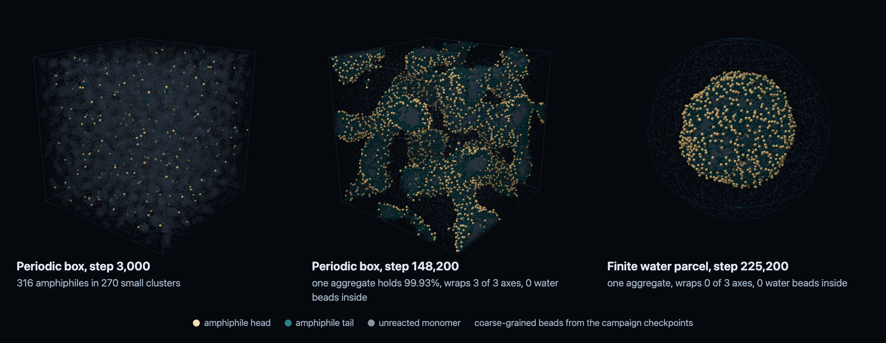

Can a primordial soup close itself into a vesicle?
A coarse-grained soup of monomers on the GPU, pass criteria fixed before the runs, and a negative answer with a measured cause: the aggregate grows, but it never traps water.

What was measured
- No closed vesicle formed in any snapshot of any campaign.
- In a 76 σ periodic box with 483,268 particles, one aggregate collected 99.93% of the amphiphiles, wrapped through all three axes in 23 of 23 wet snapshots, and trapped no water.
- Four explanations were tested and ruled out: too much material, edge energy, weak head repulsion, box size.
- In a finite parcel of water the aggregate stopped wrapping (0 of 3 axes) and still trapped no water, so the periodic boundary was not the cause.
- What is left is the molecule: in a finite region a capped micelle costs about 19 amphiphiles and a closed vesicle about 990, and a measured acid–soap pair between heads did not close that gap.
- What agreed with the literature: bilayer area per lipid 1.1734 σ² and thickness 4.4689 σ in explicit water, and the salt shift of the apparent pKa, +0.709 against about 0.7.
Rules the project held itself to
Gates before runs. Every claim has a model value, a literature corridor, a verdict and an evidence rank, and a gate is never widened to pass.
No tuning toward the answer. The bond attempt rate is not adjusted to get a result, and the engine reads every chemical constant from data files.
Emergent hydrophobicity. It has to come from water displacement, never from a direct attraction between tails.
Silent failures are findings. Six failures that looked like success are documented, each with how it was caught.